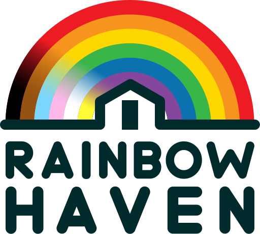

Beacon UI mockups
Static HTML for the redesign. Not wired to Go. Toggle light/dark on any screen; resize the window for desktop sidebar vs mobile dock.
- Login
- Occupants list (chrome + table/cards)
- Log expense (form)
- Monthly report
From the repo root: make mockups then open http://127.0.0.1:8765/web/mockups/